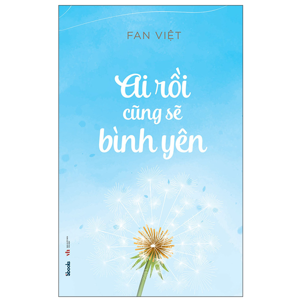

Giới Thiệu Sách Ai Rồi Cũng Sẽ Bình Yên - Tác Giả Fan Việt
Giới Thiệu
-Ai rồi cũng sẽ bình yên” chính là tên tựa đề tác phẩm đầu tay của tác giả Fan Việt ra mắt vào giữa mùa đông năm nay. Fan Việt là bút danh của một tu sĩ với pháp danh Thích Quảng Thông, sinh ra ở Nghệ An, hiện đang tu học và sinh sống tại Hà Nội. Trong khoảng thời gian tác giả theo học Thạc sĩ văn học Việt Nam tại trường Đại học khoa học Xã hội và Nhân văn thuộc Đại học Quốc gia Hà Nội đã viết lên những nỗi niềm, tâm tư và cách nhìn nhận về cuộc sống ở trong tác phẩm này.
Phần Chính
- Trải qua hành trình của cuộc đời, bản thân tôi cũng đã từng sầu đau, đã từng bất an và hoang mang cùng cực, trái tim đã không biết bao lần phải chịu tổn thương. Rồi một ngày tôi bất chợt nhận ra, nếu hiểu trái tim, nếu yêu thương bản thân, biết xoa dịu mọi nỗi đau, chấp nhận mọi thử thách ngang trái của cuộc đời, thì bạn sẽ thăng hoa trong cảm xúc của bình yên đến lạ”. Những dòng tâm tình trải lòng của tác giả cho thấy con người dù ở cương vị nào, hoàn cảnh nào cũng rất cần một bến đỗ bình yên
- Nội dung tác phẩm chia làm sáu mươi chủ đề khác nhau nào là: Phải giữ lòng mình thật yên;Tình cảm là nhất thời, lý tưởng là mãi mãi; Quan tâm đúng cách; Tràn duyên; Ai rồi cũng sẽ bình yên… cũng chính là sáu mươi cách nhìn nhận của tác giả muốn đưa người đọc thấy được “bình yên là cảm xúc đến từ trái tim của chính bạn, chứ không phải cảm xúc do người khác mang đến”. Với mong muốn mọi người ai cũng tìm được cho mình sự bình yên thật sự.
- VTrong chủ đề “Về nhà” tác giả chia sẻ “Nhà – không chỉ có cha có mẹ có anh chị em. Nhà còn là khởi điểm của bạn trong kiếp người này. Nếu thành công bạn đừng quên điểm xuất phát vô cùng quý giá ấy. Nơi đó luôn tồn tại một tình yêu, một tình thương không bao giờ phai nhạt. Hãy trở về Nhà- lúc bạn cảm thấy cần trở về”. Hay ở chủ đề “Ai rồi cũng sẽ bình yên” Tác giả cũng bộc bạch: “Trong thế giới rộng lớn ấy, ta đi tìm ta, tìm lại những giá trị của bản thân, tìm lại những giá trị từ hơi thở, tìm về sự bình yên và cả sự hồn nhiên. Hãy tạo cho mình những con đường tươi đẹp, để bước tiếp và bước đi thật an yên”.
